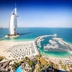

Dubai is the City that I would like to visit one day

Dubai! City of adventure, City of opportunities, City of business, City of buildings, City of
multicultural peoples, City of freedom, City of modernization, City of technology, City of peace and
many more. It’s located in the southern Persian Gulf which is very developed and sophisticated city of
UAE (United Arab Emirates) , There are in many tourist places in Dubai where once in life have to visit.
Dubai attraction! Means in the world every day un-countable peoples are going to Dubai as a visit or to
find the best opportunity.The beauty of Dubai, tallest wonder of the world, Dubai attractions for peoples. The height of Burj Khalifa is 2722 feet its located in downtown area of Dubai. Inside the Burj Khalifa there are many restaurants, Walking area, mosque and many interesting things you will found specially you will enjoy the Dubai waterfall which is located in between of Dubai Mall and Burj Khalifa .